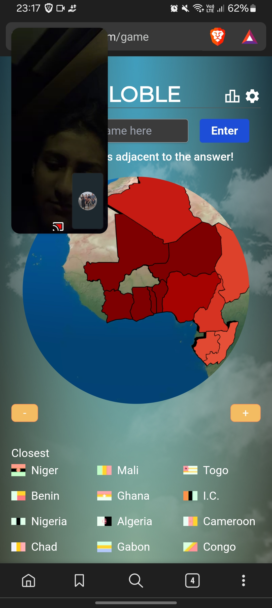
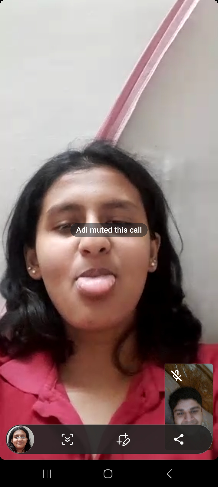
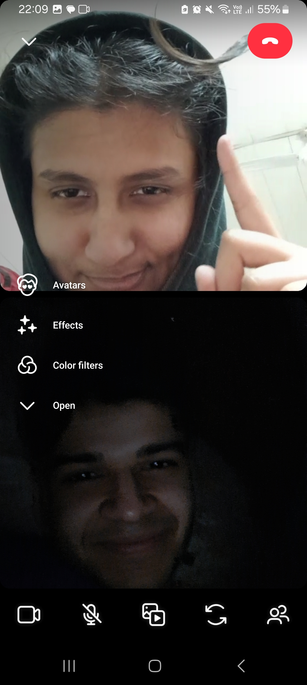
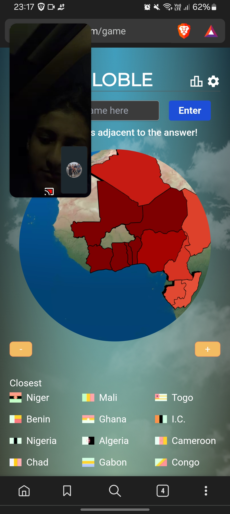
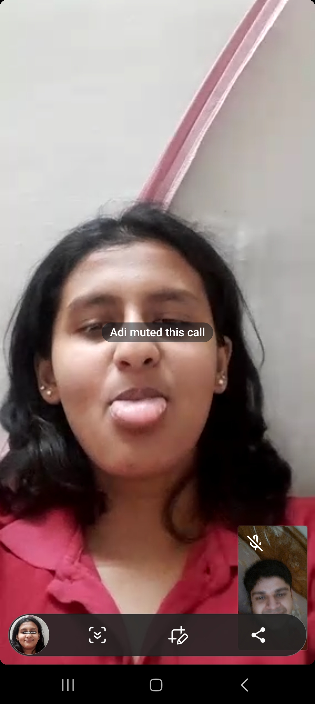
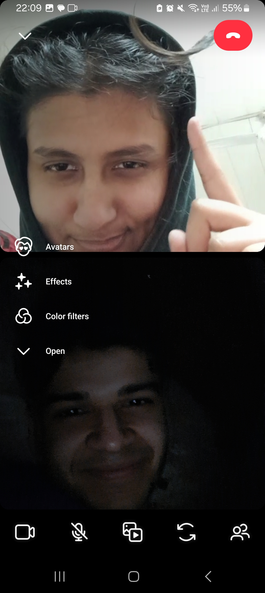

Happy Anniversary Baby Girlll!! 🥂
It seems like such a surreal experience that we happened the way we did. I still remember you dragging me along to dance on the last day of 10th Grade. I remember being grumpy and annoyed at everything, but if I rememeber that day fondly, it is because of you Adira.
If I belive in fate, it is because one random day, I asked Nikita if you were still there in school and I decided to go along with her and have lunch. You were there on the back of my mind because of the vibe you gave off. Chaotic? Very much, but someone I enjoyed being around? Yes. Who knew it would turn out to the be the best decision of my life?
I will be honest, I have never been as nervous in my life as I was while asking you to be my girlfriend. I had stayed up debating how do I ask this question to you and how would I feel if you said yes (or if you said no). That night was honestly one of the toughest nights of my life, and asking you about it the next day in school was even more nerver wracking. I do not remember an ounce of what was taught that day in school or how was everything around me because I was so lost and nervous. I may have been sweating like a pig too lol. But I knew I would not be able to rest unless I got an answer. And well it turned out to be a no 😂.
I remember being annoyed when you asked me to stay back after lunch because you wanted to talk. I say annoyed because I was hurting from being rejected and I wanted to get as far away from you as possible lol. But my heart did not really give me a choice as it still wanted to be with you. I remember you telling me that you have to leave in 4 months and getting even more annoyed because I already got it that you would not be dating me, no need to rub it in. However, that small `but` that you said gave me hope hehe. I vaguely remember you going on telling me again and again that you will leave in 4 months, but I was just giddy and happy that I was able to call you my girlfriend.
That was one of the worst phases of my life so far. 0/10. I would never want to experience it again. I still feel my heart hurting at times from the memory of it. Honestly, the only reason I was able to not throw a huge tantrum and get pissed at the whole world was because I saw you standing in front of me trying to be strong for me, and it felt horrible that I was not able to prevent it. I think this was also the only reason I didn't cry because I saw you needed me. Say what you want, you were tough with others, I could see when you were hurting. I remember holding you close and not giving a damn if you turned cold because of distance or didn't because I just wanted to protect you. But thank you for not turning cold hehe. I love you 👩❤️👨.
No matter how tough I imagined the Long Distance to be, it was 10x tougher. I hated not being able to be there for you when the situation needed it. I hated seeing you cry on the phone and I could not do anything other than just type out messages to make you feel better. I hated not being able to hug you, Hell, I hated missing getting spanked by you. And I still do, I still miss all those things about us. It sucks to watch other couples walking around hand in hand and being able to do things that we want to do. But it also teaches me that I'm wiling to wait. That I am willing to sit and wait for the rest of my life to find. Or that I'm willing to be patient when putting in efforts so I can come and meet you when the time permits it. I know you feel scared that we're running out of time, its a valid apprehension, but only you are worth waiting for, nothing and nobody else is worth the wait. So I will wait, and work and be patient so that when the time comes, I can be with you. Happy Anniversary Adira, I love you so much 💖🎂🌹
 




